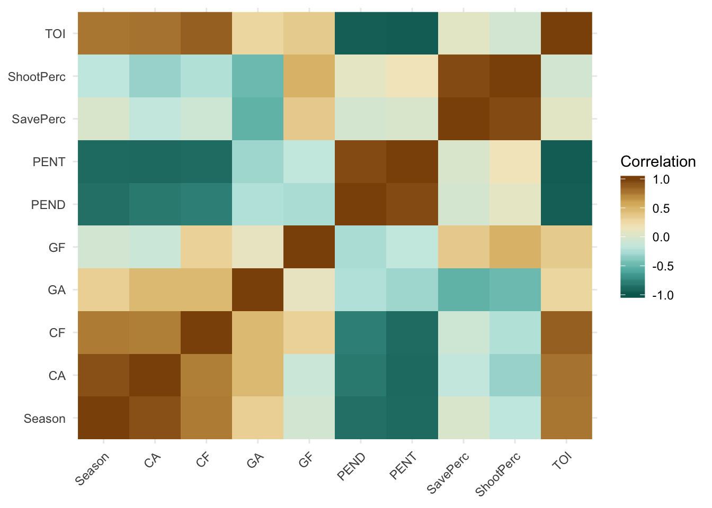
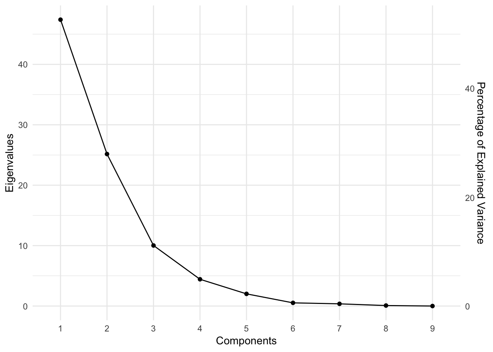

NHL PCA
Matthew J. Kmiecik & Ekarin E. Pongpipat
date here
Setup
Here are the packages that we’ll use for these analyses and to style the output/plots.
# Packages ----
library(tidyverse) # For data manipulation, plotting, etc.
library(RCurl) # To import data on github
library(TInPosition) # PCA tools
library(ggrepel) # Plotting tool for ggplot2
library(kableExtra) # HTML table tools
library(RColorBrewer) # Nice plotting colors
# Custom functions ----
# nice_table() simplifies the printing of HTML tables using kable
nice_table <- function(x){
kable(x) %>%
kable_styling(bootstrap_options = c('striped', 'hover', 'responsive'))
}
# Color palettes ----
rdgy <- brewer.pal(n = 11, name = "RdGy") # display.brewer.pal(11, "RdGy")Let’s first prepare the data for analysis. These data were downloaded from Corsica’s team stats tool. We’ve prepared these data for you and are available for import into R like this:
# Link to raw data on Github
link <- "https://raw.githubusercontent.com/mkmiecik14/mkmiecik14.github.io/master/data/nhl-team-data-corsica.csv"
# reads in data from Github
nhl_data <- read_csv(file = getURL(link))To make things as simple as possible, without losing information, we’ll use Chicago Blackhawk’s data from the 2007-2008 season up through the 2017-2018 season (11 years of data) and only a subset of the available metrics. These include:
- Games Played (GP)
- Time on Ice (TOI)
- Corsi For (CF) = Shot attempts for at even strength: Shots + Blocks + Misses
- Corsi Against (CA) = Shot attempts against at even strength: Shots + Blocks + Misses
- Goals For (GF)
- Goals Against (GA)
- Pentaly minutes served (PENT)
- Penalty minutes drawn (PEND)
- Shooting Percentage (ShootPerc)
- Save Percentage (SavePerc)
# Preparing Hawks data ----
hawks_data <- nhl_data %>%
select(Team:CA, GF, GA, PENT, PEND, ShootPerc = `Sh%`, SavePerc = `Sv%`) %>%
filter(Team == "CHI") %>%
separate(Season, into = c("Start_Year", "Season")) %>%
mutate(Team = NULL,
Start_Year = NULL,
Season = as.numeric(Season)
)
# Prints data
nice_table(hawks_data)| Season | GP | TOI | CF | CA | GF | GA | PENT | PEND | ShootPerc | SavePerc |
|---|---|---|---|---|---|---|---|---|---|---|
| 2008 | 80 | 3423.00 | 2600 | 2629 | 143 | 130 | 368 | 365 | 9.04 | 91.92 |
| 2009 | 82 | 3646.73 | 3286 | 2655 | 146 | 124 | 335 | 368 | 7.45 | 92.42 |
| 2010 | 82 | 3881.33 | 3784 | 2907 | 178 | 147 | 276 | 299 | 8.30 | 90.53 |
| 2011 | 82 | 3955.85 | 3704 | 3314 | 167 | 144 | 239 | 277 | 8.06 | 92.03 |
| 2012 | 82 | 3944.77 | 3698 | 3290 | 166 | 164 | 270 | 287 | 8.15 | 90.99 |
| 2013 | 48 | 2300.80 | 2103 | 1783 | 105 | 68 | 151 | 159 | 8.97 | 92.94 |
| 2014 | 82 | 3979.35 | 3890 | 3129 | 182 | 149 | 244 | 231 | 8.44 | 91.39 |
| 2015 | 82 | 3980.10 | 4003 | 3462 | 150 | 128 | 225 | 248 | 6.87 | 93.54 |
| 2016 | 82 | 3985.37 | 3680 | 3585 | 135 | 141 | 216 | 234 | 6.81 | 92.81 |
| 2017 | 82 | 4053.47 | 3759 | 3692 | 164 | 136 | 206 | 222 | 8.17 | 93.31 |
| 2018 | 82 | 3940.41 | 4199 | 3821 | 156 | 173 | 214 | 261 | 7.08 | 91.82 |
Let’s also prepare a table of notable events of every year in this data set for the Chicago Blackhawks, including their Stanley Cup wins (3) and their playoff success:
# Initializing Chicago Blackhawks notable events table ----
# SCW = Stanley Cup Wins
# PF = Playoff Finish:
# 0 = Did not make playoffs
# 1 = Lost in first round
# 2 = Lost in second round
# 3 = Lost in conference finals
# 4 = Lost in Stanley Cup final
# 5 = Won Stanley Cup
hawks_events <- tibble(Season = hawks_data$Season,
SCW = factor(c(0, 0, 1, 0, 0, 1, 0, 1, 0, 0, 0)),
PF = factor(c(0, 3, 5, 1, 1, 5, 3, 5, 1, 1, 0))
)Prior to exploring these data and how they’ve changed over time, we have to:
- Adjust all scores by the number of games played due to a shorted 2012-2013 season. We do this by dividing each metric by the number of games played.
- Compute z-scores of all measures to facilitate comparisons
# Preprocesses, adjusts, and z-scores hawks data ----
hawks_data_long <- hawks_data %>%
gather(Meas, Val, -Season, -GP) %>%
group_by(Meas) %>%
mutate(Val_Adj = Val/GP, # adjusts based on games played
Val_Zscore = scale(Val_Adj) # computes z-scores
) %>%
ungroup() %>%
mutate(sig = factor(ifelse(abs(Val_Zscore) > 1.96, "p < .05", "p > .05"))) %>% # z score > 1.96
inner_join(., hawks_events, by = "Season") # adds notable hawks events
# Plots all measures together ----
ggplot(hawks_data_long, aes(factor(Season), Val_Zscore)) +
geom_path(aes(group = 1), color = rdgy[8]) +
geom_point(aes(color = sig, shape = SCW), size = 1.75) +
scale_color_manual(values = c(rdgy[3], rdgy[10]), name = "Z-Score") +
scale_shape_discrete(name = "Stanley Cup Wins") +
coord_cartesian(ylim = c(-3,3)) +
theme_minimal() +
labs(x = "Season",
y = "Measurement (Z-Score)",
title = "Chicago Blackhawk's Performance 2007-2018"
) +
facet_wrap(~Meas, nrow = 3) +
theme(axis.text.x = element_text(angle = 90, hjust = 1))
[small blurb here describing the z score plots]
Ekarin’s version
# adjust metric
hawks_data_adj <- hawks_data %>%
rowwise() %>%
mutate(GP_adj = TOI/GP,
CF_adj = CF/GP,
GF_adj = GF/GP,
GA_adj = GA/GP,
PENT_adj = PENT/GP,
PEND_adj = PEND/GP,
ShootPerc_adj = ShootPerc/GP,
SavePerc_adj = SavePerc/GP) %>%
ungroup() %>%
select(Season, contains("_adj")) %>%
inner_join(., hawks_events, by = "Season") %>%
apply(., 2, as.numeric) %>%
apply(., 2, scale)
# correlation matrix
hawks_cor_mat <- cor(hawks_data_adj)
# convert to long format
hawks_cor_long <- hawks_cor_mat %>%
reshape2::melt() %>%
arrange(Var1, Var2)
# heatmap
ggplot(hawks_cor_long, aes(x = Var1, y = Var2, fill = value)) +
geom_raster() +
labs(x = element_blank(),
y = element_blank(),
fill = "Correlation") +
theme_minimal() +
theme(axis.text.x = element_text(angle = 45, hjust = 1)) +
scale_fill_distiller(palette = "RdBu", limits = c(-1,1))
Matt’s version
Now let’s examine how these measurements relate to each other by computing their correlations and visualizing them with a heatmap.
# Converts back to wide format
hawks_data_wide <- hawks_data_long %>%
select(Season, Meas, Val_Zscore) %>%
spread(Meas, Val_Zscore)
# Computes correlations
hawks_cors <- cor(hawks_data_wide)
# Correlations to long format for plotting
hawks_cors_long <- hawks_cors %>%
reshape2::melt() %>%
arrange(Var1, Var2)
# Correlation heatmap
ggplot(hawks_cors_long, aes(x = Var1, y = Var2, fill = value)) +
geom_raster() +
theme_minimal() +
theme(axis.text.x = element_text(angle = 45, hjust = 1),
axis.title = element_blank()
) +
scale_fill_distiller(palette = "BrBG",
limits = c(-1, 1),
name = "Correlation"
)
[ a little blurb here about the patterns that emerge from the heatmap ]
PCA
We’ve explored these measures individually by plotting their change over time (2007-2018) as well as examining their correlations; however, it’s difficult to extract meaningful relationships between these variables, especially when there are a lot of variables to consider. Also, all realtionships between the variables are not considered simultaneously, but rather one at a time (e.g., bivariate correlations). Is there some way to analyze these variables’ relationships simultaneously, while also reducing their complexity?
One method of doing this is principal components analysis (PCA). PCA is often called a data reduction technique because it reduces the data structure into manageable “components” that explain proportions of variability in the data. In order to understand what each component means, we examine how information (e.g., years or measurements) is spread across the components.
Additionally, the PCA that we will demonstrate below places a constraint on the components such that they are orthogonal to each other, meaning that each component is perfectly uncorrelated with every other component (r = 0).
We go over the basics of PCA below, but we recommend the interested reader the following papers on this statistical technique:
Abdi, H., & Williams, L.J. (2010). Principal component analysis. Wiley Interdisciplinary Reviews: Computational Statistics, 2, 433-459.
Abdi, H. (2007). Singular Value Decomposition (SVD) and Generalized Singular Value Decomposition (GSVD). In N.J. Salkind (Ed.): Encyclopedia of Measurement and Statistics. Thousand Oaks (CA): Sage. pp. 907-912.
We first need to preprocess our data such that each column (e.g., measurement) has a mean of 0 and a standard deviation of 1. In other words, each column should be in z-score format. We’ve already done this above when exploring these data.
A unique feature of this dataset is the reduced 2012 - 2013 NHL season that we accounted for by scaling each column by the number of games played that season. We already did this above and do not need to repeat this step.
The first step is to convert these data into a matrix format with the season years on the rows as row names:
# Converts to matrix
hawks_data_mat <- hawks_data_wide %>% select(-Season) %>% as.matrix()
rownames(hawks_data_mat) <- hawks_data_wide$Season # Adds rownames
nice_table(hawks_data_mat) # Prints HTML table| CA | CF | GA | GF | PEND | PENT | SavePerc | ShootPerc | TOI | |
|---|---|---|---|---|---|---|---|---|---|
| 2008 | -1.3890061 | -2.4688368 | -0.4854171 | -0.9263934 | 1.8463464 | 2.1908251 | -0.2057746 | 0.3069261 | -2.3384033 |
| 2009 | -1.4909528 | -0.9280729 | -1.0362482 | -0.9635667 | 1.7270345 | 1.4018816 | -0.2953539 | -0.4588701 | -1.4947316 |
| 2010 | -0.8442424 | 0.3075156 | 0.3333859 | 1.1052072 | 0.3829492 | 0.2988564 | -0.3895168 | -0.1004303 | -0.0620987 |
| 2011 | 0.2002461 | 0.1090275 | 0.1547380 | 0.3940662 | -0.0455997 | -0.3928713 | -0.3147844 | -0.2016368 | 0.3929729 |
| 2012 | 0.1386547 | 0.0941409 | 1.3457241 | 0.3294170 | 0.1491952 | 0.1866843 | -0.3665989 | -0.1636844 | 0.3253106 |
| 2013 | -0.4876321 | -0.1673052 | -1.5027177 | 1.1940998 | -0.1503020 | -0.0384388 | 3.0104356 | 2.8614429 | 0.2383715 |
| 2014 | -0.2745214 | 0.5705123 | 0.4524845 | 1.3638039 | -0.9416566 | -0.2993946 | -0.3466702 | -0.0413931 | 0.5364805 |
| 2015 | 0.5800601 | 0.8508768 | -0.7980509 | -0.7049700 | -0.6105051 | -0.6546061 | -0.2395537 | -0.7034527 | 0.5410605 |
| 2016 | 0.8957164 | 0.0494811 | -0.0239099 | -1.6747077 | -0.8832181 | -0.8228642 | -0.2759235 | -0.7287543 | 0.5732428 |
| 2017 | 1.1703117 | 0.2454881 | -0.3216565 | 0.2001186 | -1.1169721 | -1.0098176 | -0.2510127 | -0.1552505 | 0.9891094 |
| 2018 | 1.5013658 | 1.3371727 | 1.8816679 | -0.3170749 | -0.3572717 | -0.8602549 | -0.3252469 | -0.6148969 | 0.2986854 |
Next we’ll decompose this matrix using a singular value decomposition (SVD), the mathematical procedure at the heart of PCA. A SVD will decompose our original matrix (X) into 3 separate matrices (U, , V). The original data matrix can be reconstructed via matrix multiplication/linear algebra of these 3 matrices:
\[ \mathbf{X = U \Delta V^T} \]
Briefly, U contains information about the rows (e.g., years), V contains information about the columns (e.g., measures), and is a diagonal matrix of “weights” called singular values that are the square root of the eigen values.
Computing the SVD of our data matrix in R requires one line of code:
hawks_data_svd <- svd(hawks_data_mat) # Singular value decomposition (SVD)Eigen Values
inertia <- sum(hawks_data_svd$d^2) # Calculates inertia
# Calculates values for the scree plot
scree <- tibble(eigs = hawks_data_svd$d^2,
perc_explained = (eigs/inertia)*100,
comps = 1:length(eigs)
)
nice_table(round(scree, 2)) # prints HTML table| eigs | perc_explained | comps |
|---|---|---|
| 47.40 | 52.66 | 1 |
| 25.16 | 27.95 | 2 |
| 10.02 | 11.14 | 3 |
| 4.43 | 4.92 | 4 |
| 2.02 | 2.24 | 5 |
| 0.53 | 0.59 | 6 |
| 0.37 | 0.41 | 7 |
| 0.08 | 0.09 | 8 |
| 0.00 | 0.00 | 9 |
# Scree plot
ggplot(scree, aes(factor(comps), eigs)) +
geom_point() +
geom_path(aes(group = 1)) +
scale_y_continuous(sec.axis = sec_axis(~./inertia * 100,
name = "Percentage of Explained Variance"
)
) +
labs(x = "Components", y = "Eigenvalues") +
theme_minimal()
Row-wise Factor Scores
svd_u <- hawks_data_svd$u
round(svd_u, 3) %>% nice_table| -0.670 | 0.198 | -0.032 | 0.252 | -0.413 | -0.118 | -0.305 | -0.066 | -0.195 |
| -0.473 | 0.208 | -0.128 | -0.238 | 0.466 | -0.013 | 0.139 | 0.066 | 0.456 |
| -0.046 | -0.010 | 0.445 | -0.290 | 0.187 | 0.030 | 0.096 | 0.201 | -0.696 |
| 0.089 | 0.019 | 0.092 | -0.114 | -0.099 | -0.313 | 0.404 | 0.484 | 0.191 |
| 0.070 | 0.115 | 0.345 | 0.271 | -0.118 | 0.241 | 0.532 | -0.575 | 0.114 |
| -0.135 | -0.890 | -0.141 | 0.241 | 0.130 | 0.058 | 0.020 | 0.010 | 0.008 |
| 0.168 | -0.096 | 0.384 | -0.350 | -0.222 | 0.369 | -0.515 | 0.026 | 0.384 |
| 0.181 | 0.075 | -0.377 | -0.324 | 0.333 | -0.093 | -0.182 | -0.495 | -0.215 |
| 0.194 | 0.207 | -0.531 | 0.114 | -0.172 | 0.594 | 0.121 | 0.322 | -0.149 |
| 0.279 | -0.052 | -0.207 | -0.178 | -0.460 | -0.525 | 0.033 | -0.120 | 0.046 |
| 0.343 | 0.227 | 0.151 | 0.616 | 0.368 | -0.230 | -0.344 | 0.147 | 0.056 |
Column-wise Factor Scores
svd_v <- hawks_data_svd$v
round(svd_v, 3) %>% nice_table| 0.413 | 0.082 | -0.259 | 0.415 | -0.187 | -0.662 | -0.088 | -0.307 | 0.089 |
| 0.422 | -0.043 | 0.134 | -0.098 | 0.794 | 0.022 | -0.250 | -0.215 | -0.229 |
| 0.231 | 0.302 | 0.577 | 0.631 | -0.079 | 0.321 | 0.058 | 0.106 | 0.032 |
| 0.094 | -0.404 | 0.700 | -0.315 | -0.168 | -0.384 | -0.082 | 0.024 | 0.238 |
| -0.424 | 0.142 | 0.150 | 0.170 | 0.438 | -0.460 | 0.575 | 0.115 | -0.053 |
| -0.445 | 0.087 | 0.179 | 0.043 | -0.032 | 0.120 | -0.112 | -0.853 | 0.073 |
| -0.073 | -0.584 | -0.191 | 0.382 | 0.269 | 0.188 | 0.023 | 0.023 | 0.603 |
| -0.135 | -0.585 | 0.032 | 0.328 | -0.142 | -0.007 | -0.019 | -0.021 | -0.714 |
| 0.433 | -0.163 | -0.035 | -0.192 | -0.121 | 0.224 | 0.759 | -0.326 | -0.028 |
nhl_data_mat <- as.matrix(nhl_data[,2:ncol(nhl_data)])
rownames(nhl_data_mat) <- nhl_data$Season
nhl_data_mat_scaled <- apply(nhl_data_mat, 2, scale)
nhl_data_svd <- svd(nhl_data_mat_scaled)
rows <- nhl_data_svd$u %*% diag(nhl_data_svd$d)
columns <- nhl_data_svd$v %*% diag(nhl_data_svd$d)
fis <- as.tibble(rows) %>%
mutate(Season = nhl_data$Season,
SCW = factor(ifelse(Season %in% c("2009_2010", "2012_2013", "2014_2015"), "Won", "Lost"))
)
fjs <- as.tibble(columns) %>%
mutate(meas = colnames(nhl_data)[-1])
ggplot(fis, aes(V2, V3, color = SCW)) +
geom_vline(xintercept = 0, alpha = 2/3) +
geom_hline(yintercept = 0, alpha = 2/3) +
geom_point() +
coord_cartesian(xlim = c(-7,7), ylim = c(-7,7)) +
scale_color_brewer(palette = "Dark2") +
geom_text_repel(aes(label = Season), segment.alpha = 0) +
theme_classic() +
theme(axis.title=element_blank(),
#axis.text=element_blank(),
axis.ticks=element_blank(),
axis.line = element_blank()
)
ggplot(fjs, aes(V2, V3)) +
geom_vline(xintercept = 0, alpha = 2/3) +
geom_hline(yintercept = 0, alpha = 2/3) +
geom_point() +
coord_cartesian(xlim = c(-7,7), ylim = c(-7,7)) +
scale_color_brewer(palette = "Dark2") +
geom_text_repel(aes(label = meas), segment.alpha = 0) +
theme_classic() +
theme(axis.title=element_blank(),
#axis.text=element_blank(),
axis.ticks=element_blank(),
axis.line = element_blank()
)
ggplot(nhl_data, aes(PEND, PENT)) +
geom_point() +
geom_smooth(method = "lm")
cor.test(nhl_data$PENT, nhl_data$PEND)
summary(lm(PENT~PEND, data = nhl_data))gp <- nhl_data$GP
nhl_data_mat_2 <- as.matrix(nhl_data[3:ncol(nhl_data)])
nhl_data_scaled1 <- apply(nhl_data_mat_2[,1:7], 2, function(x){x/gp})
nhl_ready <- cbind(nhl_data_scaled1, nhl_data_mat_2[,8:9])
nhl_scaled <- apply(nhl_ready, 2, scale)
nhl_svd <- svd(nhl_scaled)
rows <- nhl_svd$u %*% diag(nhl_svd$d)
columns <- nhl_svd$v %*% diag(nhl_svd$d)
fis <- as.tibble(rows) %>%
mutate(Season = nhl_data$Season,
SCW = factor(ifelse(Season %in% c("2009_2010", "2012_2013", "2014_2015"), "Won", "Lost"))
)
fjs <- as.tibble(columns) %>%
mutate(meas = colnames(nhl_data)[3:ncol(nhl_data)])
inertia <- sum(nhl_svd$d)
scree <- tibble(eigs = nhl_svd$d,
perc_explained = (eigs/inertia)*100,
comps = 1:length(eigs)
)
ggplot(scree, aes(factor(comps), eigs)) +
geom_point() +
geom_path(aes(group = 1)) +
scale_y_continuous(sec.axis = sec_axis(~./inertia * 100,
name = "Percentage of Explained Variance"
)
) +
theme_minimal()
ggplot(fis, aes(V1, V2, color = SCW)) +
geom_vline(xintercept = 0, alpha = 2/3) +
geom_hline(yintercept = 0, alpha = 2/3) +
geom_point() +
coord_cartesian(xlim = c(-7,7), ylim = c(-7,7)) +
scale_color_brewer(palette = "Dark2") +
geom_text_repel(aes(label = Season), segment.alpha = 0) +
theme_classic() +
theme(axis.title=element_blank(),
#axis.text=element_blank(),
axis.ticks=element_blank(),
axis.line = element_blank()
)
ggplot(fjs, aes(V1, V2)) +
geom_vline(xintercept = 0, alpha = 2/3) +
geom_hline(yintercept = 0, alpha = 2/3) +
geom_point() +
coord_cartesian(xlim = c(-7,7), ylim = c(-7,7)) +
scale_color_brewer(palette = "Dark2") +
geom_text_repel(aes(label = meas), segment.alpha = 0) +
theme_classic() +
theme(axis.title=element_blank(),
#axis.text=element_blank(),
axis.ticks=element_blank(),
axis.line = element_blank()
)